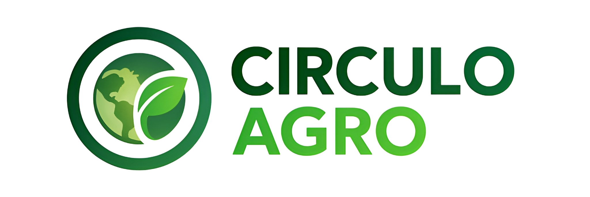

De desecho a recurso, de problema a solución

De desecho a recurso, de problema a solución
Promover la reutilización, reciclaje e innovación ecológica mediante una red que conecte a artesanos, productores y consumidores, generando impacto ambiental positivo y desarrollo local sostenible.
Ser una plataforma líder en sostenibilidad y economía circular en Panamá, impulsando la transformación de los desechos en recursos útiles y fortaleciendo la conciencia ambiental en las comunidades.